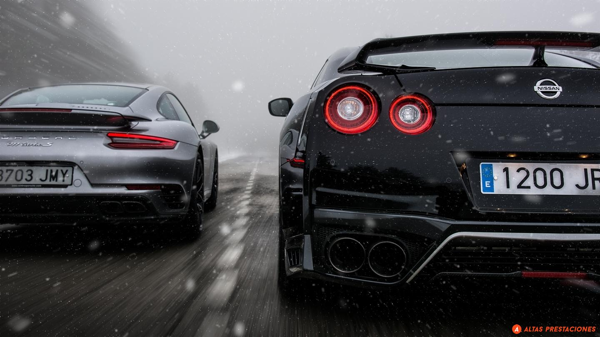

Nissan GT-R vs Porsche 911 turbo s
pero su veteranía ha puesto en duda su reinado en las carreras de aceleración en favor de otros rivales que han sabido
adaptarse a la dura competencia con unos propulsores y unos sistemas de tracción más avanzados. Sin embargo, el modelo
japonés se resigna a caer derrotado y el Porsche 911 Turbo S ha sido el último en enfrentarse a él.
La última generación del deportivo alemán supera con creces los 600 caballos de potencia gracias a diferentes soluciones
adoptadas en el bloque bóxer turboalimentado de seis cilindros. Pero en esta ocasión no ha sido la generación 992 la
encargada de dirigirse a la pista para medirse con el GT-R, sino la anterior, es decir, la denominada 991. Con su propulsor
biturbo de 3.8 litros es capaz de desarrollar 580 caballos de potencia y un par máximo de 700 Nm (750 Nm con la función
overboost), asociado a una caja de cambios automática de siete velocidades PDK y un sistema de tracción a las cuatro ruedas.
| Marca | Modelo | Año | Tipo de Motor | Cilindraje | HP | Torque | Aceleración (0-100 km/h) |
|---|---|---|---|---|---|---|---|
| Nissan | GT-R | 2022 | Twin Turbo V6 | 3.8L | 565 | 633 Nm | 2.7 segundos |
| Porsche | 911 Turbo S | 2022 | Twin Turbo Flat-6 | 3.8L | 640 | 800 Nm | 2.6 segundos |